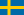
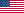
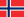
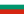

Globalvision Song Contest
The Globalvision Song Contest (or simply Globalvision or GV) began in May 2017, right after the end of the Eurovision Song Contest 2017. It was brought to life by TeenIdle, who became the host of the game and one of the jury members.
The format is similar to the Eurovision system, but is adapted to online context and to just a reduced number of people. Every participant has to choose a country (not only from Europe) and then send a song to represent it. Then the host reveals the countries and their songs in different days, following a randomly generated draw. After the last country is posted the voting begins, every participant has to vote on his or hers most favorite songs with the top 10 of each participant getting a certain ammount of points depending on their position in the top 10 of that participant (The most favorite song of the participant gets 12 points, the 2nd 10, the 3rd 8, the 4th 7 and so on to the 10th one that gets 1 point). In some cases, countries get disqualified, usually for not sending their votes on time, meaning that the top 10s already sent by other participants may get altered if they had voted for a disqualified country, for that cases in season 2 there were introduced replacement countries, so since then, each participant has to send his or her top 10 and 3 or 5 extra replecement countries, that may get points in case of a disqualification of one of the countries that appear among the first 10. A few days after the deadline for submitting votes, the final ceremony is held, with those few days in between destined to prepare the visuals by the host. The ceremony usually consists of two parts (except in season 3 where the first half was skipped); the first one consists on the reveal of the top 10 votes by each participant, while the second one consists on the reveal of the total results starting from last place to first one, with the jury vote added to the participant total revealed in the first part.
Juries have the same voting system as the participants, they don't have a country nor a entry, but their votes count double (24, 20, 16, 14, 12... 2) and usually their top 10 votes are kept in secret as participants get only to see the total of jury points they receive.
So far, only 7 participants won the contest at least once, with 3 of them winning more than once. Those participants are Dutch, Bellatrix and DeluluSwine, being the first one the only one to win actually 4 times. Over 70 persons have participated in the contest so far, many of them kept participating after their debut or at least came back after a few seasons. In season 11 many new participants appeared and the number of entries was close to 40 at one moment, with 35 making their way to the final. In that season it was decided that no more than 40 entries will be able to participate, discarding the possibility of making semifinals. That number was reached in the season that followed.
Seasons held so far and winners
| Season | Country | Participant | Artist | Song | Language | Points | 2nd place | 3rd place | Participants | Pages |
|---|---|---|---|---|---|---|---|---|---|---|
| 1st |  Belgium Belgium |
Dutch | Loïc Nottet | Million Eyes | English | 174 | Netherlands |  Finland Finland |
21 | 62 |
| 2nd | Sweden | Bellatrix | Loreen | Statements | English, Arabic | 222 | United States |  Russia Russia |
17 | 41 |
| 3rd | .svg.png) France France |
loathereality | L.E.J. | La Dalle | French | 156 | Norway |  Denmark Denmark |
17 | 35 |
| 4th | Netherlands | Dutch | Roxeanne Hazes | Verdovend Middel | Dutch | 215 | Sweden |  Australia Australia |
19 | 60 |
| 5th | Sweden | Bellatrix | Mariette | A Million Years | English | 157 | France |
 Germany Germany |
19 | 58 |
| 6th | Germany |
benKo | Lena | Traffic Lights | English | 166 | Sweden | Netherlands | 25 | 91 |
| 7th | Netherlands | Dutch | Eva Simons | Guaya | English, Spanish | 150 |  Switzerland Switzerland |
Australia |
22 | 90 |
| 8th | Norway | DeluluSwine | Sigrid | Strangers | English | 162 | Australia |
France |
23 | 118 |
| 9th | United States | Bloody Grammys | Ava Max | My Way | English | 126 | Australia |
Netherlands | 23 | 107* |
| 10th | .svg.png) United Kingdom United Kingdom |
DeluluSwine | Foxes | Body Talk | English | 168 |  Armenia Armenia |
Norway | 23 | 251 |
| 11th | United Kingdom |
blackstar | Alice Chater | Hourglass | English | 163 |  Spain Spain |
 Poland Poland |
35 | 1272 |
| 12th | Netherlands | Dutch | AMY MIYÚ feat. Rochelle | All Good | English | 289 | United Kingdom |
New Zealand | 40 | 1345 |
| 13th | Sweden | Bellatrix | Agnes | I Trance | English | 309 | Netherlands |  Albania Albania |
36 | 1006 |
| 14th | Norway | DesertWolf | AURORA | The Seed | English | 267 | Switzerland |
 England England |
37 | 1020 |
| 15th | Sweden | Dutch | LÉON | You And I | English | 304 |  Italy Italy |
Greece | 32 | +700 |
Note: *S9 was closed prematurely by mods, way before the ceremony took place, which happened on TapaTalk
Uniqueness Award
The Uniqueness Award was introduced in season 8, an idea proposed by Dutch, to recognize the riskiest choices of each season, taking in mind their quality and outstanding among the other entries of each season.
Memorable entries
In some ocasions entries that didn't earn good results but gained a good status as a meme or just an iconic entry. In the next table only appear those entries that became quite famous for different reasons. Winners are not included as they already appear on the previous section, even though Eva Simons should be mentioned here as her appearance was one of the most memorable ones, with many jokes about her name, nationality or hair.
| Season | Country | Participant | Artist | Song | Position | Reason |
|---|---|---|---|---|---|---|
| 2nd | United States | littlepotter | Billie Eilish | Bellyache | 2nd | Her only appearance before she became famous. |
| 2nd | .svg.png) Japan Japan |
Glittertinks | FEMM | Countdown | 6th | Memorable entry, still mentioned after over 10 seasons, probably the most acclaimed japanese entry. |
| 3rd | Sweden | Bellatrix | Marie Lindberg | Trying to Recall | 13th | Soccer mom meme, flop after iconic win. |
| 5th | Italy |
DesertWolf | Annalisa | Direzione La Vita | 6th | Jury snub, huge meltdown by the user. @teenidle's nightmare |
| 6th | Greece | hausofcy | Eleni Foureira | Το Κάτι Που Έχεις (To Káti Pou Écheis) | 11th | 2nd participation in a row, Cyprus mess. |
| 6th | Switzerland |
NNES | Luca Hänni | Set The World On Fire | 13th | Foot fetish twink. |
| 7th | Germany |
benKo | Alice Merton | Lash Out | 5th | "Hard to hold this fart inside me" joke, 2nd appearance. |
| 7th | Spain |
DesertWolf | Malú | Ciudad De Papel | 12th | Jury snub, iconic entry, huge meltdowns. |
| 8th | Greece | hausofcy | Tamta | Αρχές Καλοκαιριού (Arhés Kalokeriou) | 14th | Exaggerated product placement in the video, Carroten. |
| 9th | Australia |
Floo | Sam Bluer | Body High | 2nd | Snubbed due to a change of jury system. |
| 9th | Belgium |
hausofcy | K3 | Oya Lélé | 23rd | Random entry, messy af yet funny. |
| 10th | Armenia |
Dutch | Iveta Mukuchyan | Hayastani Axjikner | 2nd | Iveta iconic status and a huge usage of Iveta's gifs. |
| 10th | .svg.png) Canada Canada |
loathereality | Weaves feat. Tanya Tagaq | Scream | 22nd | WTF entry? Weird video, weird song, unlistenable. |
| 11th | Spain |
Dutch | Reyko | Spinning Over You | 2nd | ASMR, Selena Gomez comparisons |
| 11th | Germany |
Sharpay | Kim Petras | Heart To Break | 4th | Anti-fan club, mixed feelings. |
| 11th | Greece | hausofcy | Eleni Foureira | Tómame | 5th | Tomato meme, 3rd participation. |
| 11th | Bulgaria | kvnrp | Papi Hans | Keks | 33rd | Very random entry. |
| 12th | Vietnam | OG Gaga Stan | Chi pu | Mời Anh Vào Team Em | 18th | Music video with pigs and many other random scenes. |